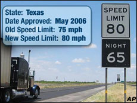

09.16.06
My drive out west
Having spent a month out here in sunny California, I figured it was about time I made a post about my trip before I forgot everything.
Speaking of which, it was about two hours after I left that I realized what I’d left at home. I remembered all my books, all my CDs, all my clothes, even my racquetball glove. But the AAA maps of every state on the trip? Of course not!
My original plan was to take I-10 out west to El Paso, head up to Flagstaff the second day, then hit the Grand Canyon, Hoover Dam and Santa Clara over the course of the next two days. Does this sound vague? Yes, those maps would have helped…

My days ended at B, D, G, and H. E is the Grand Canyon and F is the Hoover Dam. C is Albuquerque, which isn’t exactly in a class with either of these, though I did get to try a vanilla frosty there. But let’s not get ahead of ourselves.
Day 1 Texas is big
Left at ~11 AM. I’d been to San Antonio before, en route from Austin to Houston, (don’t ask) so I didn’t feel as though the trip really began until I made it into West Texas. Seeing mile markers in the 700′s wasn’t good for morale, but this sign sure was

I really had no idea it was coming. This sign seriously made my day. The miles tick by so much faster when you can go 80-90. That being said, 85-90 MPH is just plain scary when driving conditions aren’t perfect. At one point I saw some haziness up ahead. One instant it was dry as could be. The next, I was hit by a complete wall of water and visibility went down to zero. Two minutes later and it was clear again, though the road remained slippery. I guess those transitions happen quickly at 85 MPH.
West Texas was wonderfully rugged compared to Houston, and this part of the trip made me wish I’d visited Big Bend while I was at Rice. It’s easy to forget just how completely empty most of the United States really is. I’d say that Indiana is largely “empty,” but when I say that, I think of “empty” as enormous corn fields. West Texas is seriously empty. Nobody’s ever done anything with that land. I imagine that if you went a few miles off the road, you’d be the only human in an x mile radius.
Day one ended about 10 PM and 700 miles into the trip in Fabens, TX, a small railroad town just SE of El Paso. I stayed at the Fabens Inn, the only motel in the area. It was run by an Indian family that lived on the premises. They must have done well for themselves, because there was a spectacularly huge TV just visible in the living room. It must have been at least 60″ and looked completely out of place in the smallish cement buildling. The room wasn’t particularly nice and the bath/shower didn’t really work, but it had free wireless, so I couldn’t complain.
Day two blah
I got off to an early start and finally left Texas. New Mexico seems like a singularly dull state. It looks a lot like West Texas, except it doesn’t have the rest of Texas to offset the austerity. The most intriguing signs I saw were for the Very Large Array and the future site of the New Mexico Spaceport. Cool, sure, but not as cool as leaving New Mexico!
The highlights of the state were checking it off my list (I think I’m up to ~35 states) and trying out a Vanilla Frosty in Albuquerque. The Vanilla Frosty is a bit strange, since chocolatey goodness is part and parcel of the whole Frosty experience. It wasn’t bad, exactly, it just wasn’t that exciting. I assume that they introduced it to complement frosty mixins. A Vanilla Frosty with M&M’s mixed in competes more directly with the McFlurry and Blizzard.
I ended the day in Flagstaff, AZ, a city that I’ve always associated with the space race and growing up in the fifties or sixties. Those are strange associations for me to have, so after some sleuthing (i.e. visiting that Wikipedia page I just linked to) I discovered why. The main character in 3001 grew up in Flagstaff and reminisces about his childhood in the book. That wasn’t a typo, by the way. 3001 is the third sequel to the more famous 2001. It’s one of my favorite sci-fi books by one of my fave authors, Arthur C. Clarke.
While I was there, I visited the Lowell Observatory, where the erstwhile ninth planet was discovered. The sky was overcast, so there wasn’t a whole lot to see, but I certainly had a fun time finding the place, as Doug and Cait can attest. I’ll put the over/under at 50 miles out of my way.
Day three nature is cool
As I wrote at the time:
Today was the “scenic” day of my trek out west. I began by heading up I-180 to the Grand Canyon (the scenic route, of course). It rose to about 8,000 feet in a national forest before cruising through an enormous, picturesque valley. The Canyon itself was magnificent. In the back of my mind, I kept wondering whether I’d find the right place to see the canyon, with the views that are always on postcards. But I shouldn’t have.. as soon as I went through the gates, I could see people up at the rim. When I caught my first glimpse of the Canyon, I was completely blown away. First impression was just the sheer immensity of it all, then all the cool formations (mesas) and colors.
I walked around the rim for about an hour before putting my bike together and going along the Hermit trail. It was only about a 10-15 mile bike ride, but it was definitely one of the hardest, if not the very hardest, I’ve ever gone on. For some reason, it never occurred to me that the canyon rim might be just a bit hilly. The trail answered my question “why would anyone use this low a gear?” many times.
Next I drove back down to I-40 and took it to 93 and the Hoover Dam. Highway 93 in NW Arizona must be the most boring highway ever created. It went at least 40 miles without any noticeable changes in elevation or turns. I took the opportunity to do a few reckless things.. first I burned a CD on my laptop while driving (Tupac’s Greatest Hitz) and then there may or may not have been a speed test…
I was rather nonplussed at the Hoover Dam. Compared to the Grand Canyon a few hours earlier, it just didn’t have much going for it. At least I can say I’ve seen it.
I took 93 up into Las Vegas, and then took I-15S. Those two roads took me right through the heart of Vegas, so I saw all the big casinos from the highway, including the Bellagio. My goal was to take I-15 into California (about 30 miles or so from Vegas) and grab the first motel I could find. How simpleminded of me. Situated right on the Nevada-Cali border is none other than the Mojave Indian reservation! It was 50 miles to Baker, the first city. Due to some confusion, I wound up skipping BOTH Baker exits (I thought there’d be three) and had to turn around on none other than Zzyzx road.
I’m staying in a super-sketch motel tonight ($49) but amazingly, it has free wireless!
 That super-sketch motel was called “Arne’s Royal Hawaiian.” I guess the theme was lost on me in the dark. This picture makes it look way too good. Picture it dark and dirty, with that “O” flickering in the most stereotypical manner imagineable. According to Yahoo, it “May be the worst motel in the US.” When I walked into my room and flipped the switch, nothing happened. I eventually found the bathroom light, which revealed that the shower door was held together with masking tape. Seeing as I’d just watched Psycho for the first time the previous week, I had a pretty bad feeling. But of course, it had free wireless.
That super-sketch motel was called “Arne’s Royal Hawaiian.” I guess the theme was lost on me in the dark. This picture makes it look way too good. Picture it dark and dirty, with that “O” flickering in the most stereotypical manner imagineable. According to Yahoo, it “May be the worst motel in the US.” When I walked into my room and flipped the switch, nothing happened. I eventually found the bathroom light, which revealed that the shower door was held together with masking tape. Seeing as I’d just watched Psycho for the first time the previous week, I had a pretty bad feeling. But of course, it had free wireless.
Day Four The home stretch!
Gas prices would be another reason not to spend a night at Arne’s Royal Hawaiian. I paid $3.599/gal in Baker, CA. Premium was $3.80, which is far and away the highest price I’ve ever seen for gas.
The debacle of night three made for a fairly short day four. I left about 8:30 AM and wound my way up along I-5, eventually pulling in to my temp housing around 4:30. Things there got of to an inauspicious start. I couldn’t open the door! I eventually had to get the maintenance to come out and show me the special technique. Then internet and cable didn’t work. But whatever, I had a bed and a shower, and I was in Cali!!
For the stalkerish among you, Jack inspired me to keep meticulous track of mileage on our drive home at the end of freshman year:
August 7, 2006
Depart ~11 AM, started mileage counter in the Village
11:42 AM, 37.5 mi 9.267 gal/$27.05=2.919
3:45 PM 306.8 mi 9.479/$29.38=3.099 (Segovia)
6:32 PM 516.6 mi 7.483/$23.79=3.179 (Ft. Stockton)
End day one at 10:00 PM, 726.5 mi, $58/night (Fabens, TX)August 8, 2006
9:00 AM 726.5 6.809/$21.10=3.099
2:08 PM 1,032.3 9.707/$29.69=3.059 (Albuquerque, NM)
5:03 PM 1,302.6 8.414/$25.49=3.029 (Winslow, AZ)
End day two at ~9 PM 1,456.5 mi, $80/night (Flagstaff)August 9, 2006
8:15 AM Depart Flagstaff
8:37 AM 1,426.2 4.003/$12.00=2.999
10:37 AM 1,509.5 arrive Grand Canyon ($25 entrance)
3:30 PM Depart Grand Canyon
4:24 PM food in Williams
6:25 PM 1,688.3 7.446/$22.18=2.979
11:00 PM 1,899.9 arrive Baker, CA, $49/nightAugust 10, 2006
8:24 AM 1, 900.0 6.686/$24.06=3.599 (!)
12:30 PM 2,170.9 8.360/$27.58=3.199
4:20 PM 2,352.8 mi ARRIVE!!!Total gas gal: 9.267+9.479+7.483+6.809+9.707+8.414+4.003+7.446+6.686+8.360=77.654 gal
Total gas $: 27.05+29.38+23.79+21.10+29.69+25.49+12.00+22.18+24.06+27.58=$242.32
Avg price: 242.32/77.654 = $3.12/gal
Gas mileage: (2170.9-37.5)/77.654 = 27.47 miles/gal
miles/$: (2170.9-37.5)/242.32 = 8.804 miles/$
I got 32 mpg on the drive from South Bend to Houston at the start of the summer, so 27.47 isn’t spectacular. Then again, my car was stuffed to the top with heavy stuff on this trip, and I’d guess my average speed was 5-10 mph faster.
danvk.org » Biking to work said,
September 25, 2006 at 10:35 pm
[...] I mentioned in my previous post that I’d biked around the rim of the Grand Canyon. Well, little did I know that this would be my very last ride on that bike. California didn’t treat it very well — those omnipresent bike thieves got it my very first week here. [...]
danvk said,
September 25, 2006 at 11:20 pm
Yikes, my blog pinged itself!